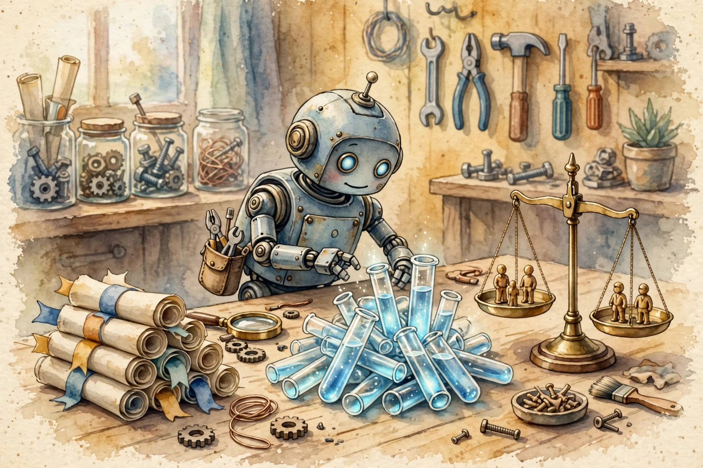
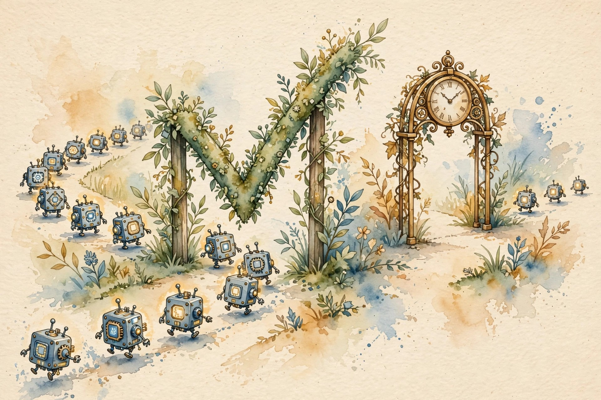
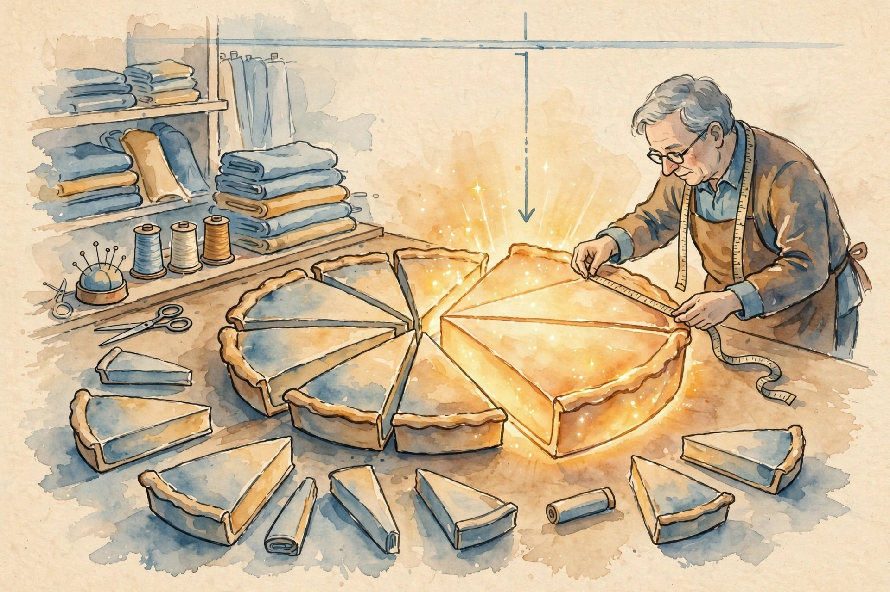

Narrated from the lesson document
Code is checkable, so the agent should write tests next to edits and let execution decide. This companion walks Unit 05: scaling test-time compute for real bugs, the KernelBench two-gate score, and the interface, profiling, test-hygiene, sandbox, receipt, and rollback discipline that makes code agents safe to run.
From the lesson The idea, and every number beside it, comes from the cited section of u05_swe_kernel_agents.md. The phrasing is the companion’s.
Illustration Invented by the companion: an analogy, a toy with made-up values, or a what-if. Never lecture content.
companion Companion voice: the idea above the tag is from the lesson. The generalization below it is the companion’s.
Provenance: no full lecture transcript exists for session 13. This page narrates the lesson document content/v2/cs329a/lessons/u05_swe_kernel_agents.md, not a video. Paper titles come from the official schedule through the lesson. The builder did not inspect paper contents. Toy numbers are the lesson’s own computed values, re-plotted here with section citations. Claim class: SOURCE ATTRIBUTION PENDING on paper pointers. Toys are computed and traceable. No benchmark numbers are claimed.

From the lessonC01 §3
Split the job into three parts: find the relevant files (context), write candidate fixes (generation), and pick the winner (selection). Scale each part on its own axis. Serial scaling means more repair iterations per attempt. Parallel scaling means more attempts. Pick the mix that buys the most coverage per dollar.
From the lessonC01 §2, §6
The toy: 8 issues. Each trajectory has solve probability p = 0.36. With K = 8 parallel trajectories, coverage = 1 − (1 − 0.36)^8 = 1 − 0.64^8 = 0.9719.
From the lessonC01 §6
Cost: context $0.40 per issue, paid once. Trajectory cost $0.05 per serial iteration, 3 iterations, so $0.15 per trajectory. Total per issue at K = 8: 0.40 + 8 × 0.15 = $1.60. Context share: 0.40 / 1.60 = 25 percent. At K = 32 the total is 0.40 + 32 × 0.15 = $5.20 and the context share falls to 0.40 / 5.20 = 7.7 percent.
From the lessonC01 §6 Move the K slider. The toy applies the lesson’s coverage law and cost split.
From the lessonC02 §3
Sampling makes options. Tests rank options. A final chooser picks the winner. The three stages fail in different ways: sampling can miss, tests can misrank, the chooser can tie-break badly. Fix the stage that loses the most.
From the lessonC02 §2, §6
The toy: K = 10, per-sample pass probability 0.30. Coverage (pass@10) = 1 − 0.70^10 = 0.9718. The search then needs a filter that finds the right one. Ten candidates, exactly 3 correct. Generated tests: precision 0.80, recall 0.90. Expected true positives: 3 × 0.90 = 2.7. Expected false positives: 7 × 0.20 = 1.4. Shortlist: about 4 candidates, about 2.7 of them right. The judge picks among 4 instead of 10, a 2.5x smaller choice set.
From the lessonC02 §6 Move the sliders. The toy applies the lesson’s filter arithmetic.
From the lessonC03 §3
The test script is a second author. The model proposes, the script disposes. Each run returns a fact (pass, fail, trace) that the next draft must respect. The edit and the test grow up together: a better edit needs a sharper test, and a sharper test finds the next bug.
From the lessonC03 §2, §6
The toy: 4 repair iterations on one issue. Pass sequence: fail, fail, pass, pass. The edit is accepted at iteration 3. Cost: 4 test runs plus 3 repairs. The loop stops at the first pass, so expected runs are fewer than the cap.
From the lessonC03 §6 Step through the loop.
| Iteration | Result | Action |
|---|

From the lessonC04 §3
Hand the model a PyTorch reference and ask for the same math in raw CUDA or Triton. Grade two things separately: does it compute the right answer, and does it beat the clock. A kernel can be right and slow, or fast and wrong. The benchmark keeps both scores visible instead of folding them into one.
From the lessonC04 §2, §6
The toy: 10 kernels with (correct, speedup): (T,1.4), (T,0.9), (F,2.1), (T,1.1), (F,0.7), (T,2.3), (T,0.95), (F,1.8), (T,1.6), (F,0.5). Correctness: 6/10 = 0.60. fast_1 (correct and s ≥ 1): kernels 1, 4, 6, 9 = 4/10 = 0.40. fast_2: kernel 6 only = 0.10. The fast-but-wrong kernels (3, 8) score 0 under fast_p.
From the lessonC04 §6 Move the threshold slider. The toy scores the lesson’s 10 kernels.
From the lessonC05 §3
Correctness is a gate, speed is a ranking. Nothing passes the gate by being fast. Among the kernels that pass, faster wins. The tradeoff is lexicographic, not a weighted sum: no weight on speed compensates for a wrong answer.
From the lessonC05 §2, §6
The toy: 6 candidates: (T,1.0), (T,1.4), (F,1.8), (T,0.9), (F,2.2), (T,1.2). Deployable: the four correct ones. Winner: (T,1.4). (F,2.2) is on the raw frontier but off the deployable frontier. The deployable frontier has 2 points: (T,1.0) and (T,1.4). (T,1.2) and (T,0.9) are dominated.
From the lessonC05 §6 Press the button. The toy applies gate-then-rank to the lesson’s candidates.
From the lessonC06 §3
The interface is the law the agent lives under. It lists the tools, the limits, and the shape of every observation. A clear interface makes agent behavior predictable and failures diagnosable. A vague interface makes both impossible.
From the lessonC06 §2, §6
The toy spec: tools {run_tests, read_file, write_file, shell}. Timeout: 30 seconds per call. Memory cap: 1 GB. Observation: exit code, last 20 lines of stdout, last 20 lines of stderr. Writes allowed only under /task. Twelve tool calls on one issue: worst-case wall time 12 × 30 = 360 s. Each observation at most 40 lines, about 2,000 tokens, so 12 calls cost at most 24,000 observation tokens. The interface turns an open-ended loop into a bounded one.
From the lessonC06 §6 Move the slider. The toy bounds the lesson’s interface.

From the lessonC07 §3
Measure first, cut second. A profile is a receipt for time: it says who spent what. Amdahl’s law turns the receipt into a bound: speeding one part by 2x cannot beat 1 / (rest + part/2). The part with the biggest share sets the ceiling.
From the lessonC07 §2, §6
The toy profile: parse 0.8 s, matmul 6.0 s, softmax 1.2 s, norm 1.0 s, copy 1.0 s. Total 10.0 s. The matmul is 60 percent. Speed up the matmul 2x: new time = 4.0 + 3.0 = 7.0 s. Speedup = 10 / 7 = 1.4286. Amdahl: 1 / (0.40 + 0.60 / 2) = 1 / 0.70 = 1.4286. The two agree. Even a perfect matmul (s → inf) gives at most 1 / 0.40 = 2.5x.
From the lessonC07 §6 Move the sliders. The toy applies the lesson’s Amdahl form.
From the lessonC08 §3
A flaky test lies at random. In the repair loop, one lie sends the agent to fix code that is fine. The defense is repetition: ask the same question three times and take the majority. The defense costs runs, so apply it only to tests with a flake history.
From the lessonC08 §2, §6
The toy: a test with per-run flake rate f = 0.10 fails good code. Run it 3 times: the chance all 3 fail on good code is 0.10^3 = 0.001. One failure means little, three mean a lot. On 200 test runs a day, expected false alarms: 0.2. Cost: 3x runs for quarantined tests. If 10 of 100 tests are quarantined, the suite cost rises by 20 runs, a 20 percent tax for honesty.
From the lessonC08 §6 Move the sliders. The toy applies the lesson’s false-alarm arithmetic.
From the lessonC09 §3
Visible tests are the practice field, hidden tests are the match. The agent may train on the field as much as it wants. If it ever sees the match questions, the score stops meaning anything. The split is a wall, not a suggestion.
From the lessonC09 §2, §6
The toy: the hidden suite has 20 tests. Edit A passes 40/40 visible and 17/20 hidden. The visible score is 1.00, the hidden score is 0.85. The 0.15 gap is the leakage-free truth. Edit B: visible 0.95, hidden 0.90. Selection on visible picks A. The honest pick is B. Leakage-free selection on visible misranks here by 0.05, but that is sample noise, not cheating.
| Edit | Visible (40) | Hidden (20) | Visible selection |
|---|---|---|---|
| A | 1.00 | 0.85 | picked |
| B | 0.95 | 0.90 | honest pick |
From the lessonC10 §3
The sandbox is a cage with measured bars. The agent is strong inside and harmless outside. Each bar is one denied capability: no network, no host writes, no endless runs, no silent actions. The cage works only if the bars are real, enforced by the kernel, not requested in the prompt.
From the lessonC10 §2, §6
The toy rules: no network, writes only under /task, read-only mount for the repo, wall-clock kill at 60 seconds, every action logged. The delete hits the read-only mount and fails. Five risky actions: write to /etc, open a socket, fork-bomb, edit the log, write to /task/x. The sandbox blocks the first 4 and allows the fifth. Block rate: 4/5. The one allowed action is inside the task area and logged.
| Action | Verdict |
|---|---|
| write to /etc | blocked |
| open a socket | blocked |
| fork-bomb | blocked |
| edit the log | blocked |
| write to /task/x | allowed, logged |
From the lessonC11 §3
Reproducibility is a receipt for the run. It lists the seed, the versions, the inputs, and the environment. With the receipt, a rerun is a replay. Without it, a rerun is a new experiment that happens to look similar.
From the lessonC11 §2, §6
The toy: seed 7, torch 2.3.1, CUDA 12.1, the same repo snapshot. Rerun: the edit is byte-identical, the test outputs match to 1e-6. Run A and run B, seed 7 both: edit diff empty, test output max difference 0.0. Verdict: reproducible. Run C, seed 8: the edit differs in 2 lines. The seed is load-bearing.
| Run | Seed | Edit diff | Max output diff | Verdict |
|---|---|---|---|---|
| A | 7 | empty | 0.0 | reproducible |
| B | 7 | empty | 0.0 | reproducible |
| C | 8 | 2 lines | - | different experiment |
From the lessonC12 §3
A checkpoint is a saved game. The agent saves after every step that passes its checks. When a step corrupts state, load the last good save instead of debugging the corruption. Rollback is dull work on purpose: it trades cleverness for certainty.
From the lessonC12 §2, §6
The toy: 5 steps, checkpoint after each. Step 4 corrupts state. Last good: checkpoint 2 (step 3’s checkpoint was skipped when its check timed out). Recovery: roll back to 2, re-run steps 3 and 4. Cost: 2 step-runs. If every checkpoint were written, the cost would be 1 step-run. The skipped checkpoint doubled the recovery.
From the lessonC12 §6 Move the sliders. The toy applies the lesson’s recovery-cost rule.
The arc, end to end. Test-time compute splits into context, generation, and selection, scaled on the serial and parallel axes (C01). Sampling makes options, tests rank them, a judge picks the winner (C02). Execution grounds every repair in outside information (C03). KernelBench grades both gates separately: right, then fast (C04). Correctness gates, speed ranks (C05). The interface is the law the agent lives under (C06). Measure first, cut second (C07). Flaky tests get quarantined, not trusted (C08). The hidden suite is touched once, after selection (C09). The sandbox cage holds because the kernel enforces it (C10). The receipt makes the rerun a replay (C11). The saved game makes recovery boring (C12).
companion Where the unit points next: the evolutionary loop of U04 becomes the training loop here, and the hidden-test discipline of C09 is the holdout discipline of U04 C09 applied to code. U06 takes the interface idea further, into memory and caches.
Every lesson on this page, in order. Tap one to return to its chapter.